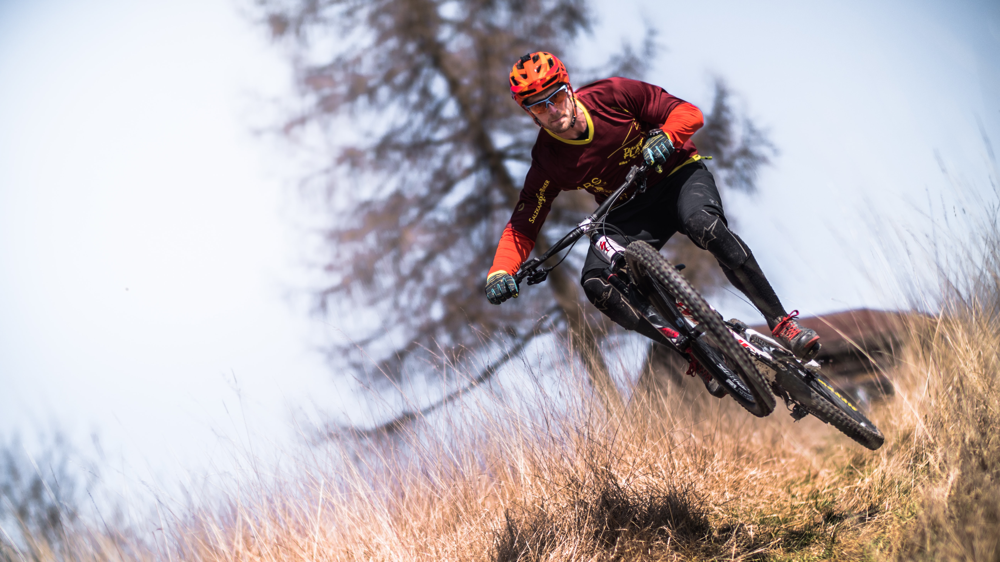
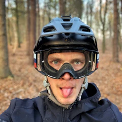

O mne
Ahoj, volám sa Rasťo Baránek, narodil som sa a žijem v Považskej Bystrici. Mám 25 rokov, posledných 15 rokov je bicykel skoro celý môj život. Jazdím súťažne zjazd na horských bicykloch za Kellys Factory team, som členom Slovenskej reprezentácie a keď nesúťažím, snažím sa pomôcť ostatným zlepšiť svoje jazdenie, techniku a tak podobneCycling, also
called bicycling or biking, is the use of bicycles for transport, recreation, exercise or
sport.[1] People engaged in cycling are referred to as "cyclists",[2] "bicyclists",[3] or
"bikers".[4] Apart from two-wheeled bicycles, "cycling" also includes the riding of
unicycles, tricycles, quadricycles, recumbent and similar human-powered vehicles (HPVs).
Bicycles were introduced in the 19th century and now number approximately one billion
worldwide.[5] They are the principal means of transportation in many parts of the world.
Cycling is widely regarded as an effective and efficient mode of transportation[6][7]
optimal for short to moderate distances.
Bicycles provide numerous possible benefits in comparison with motor vehicles, including the
sustained physical exercise involved in cycling, easier parking, increased maneuverability,
and access to roads, bike paths and rural trails. Cycling also offers a reduced consumption
of fossil fuels, less air or noise pollution, reduced greenhouse gas emissions,[8] and
greatly reduced traffic congestion.[9] These have a lower financial cost for users as well
as for society at large (negligible damage to roads, less road area required). By fitting
bicycle racks on the front of buses, transit agencies can significantly increase the areas
they can serve.[10]
In addition, cycling provides a variety of health benefits. The World Health Organization
(WHO) states that cycling can reduce the risk of cancers, heart disease, and diabetes that
are prevalent in sedentary lifestyles.[11][12] Cycling on stationary bikes have also been
used as part of rehabilitation for lower limb injuries, particularly after hip surgery.[13]
Individuals who cycle regularly have also reported mental health improvements, including
less perceived stress and better vitality.[14]
Among the disadvantages of cycling are the requirement of bicycles (excepting tricycles or
quadricycles) to be balanced by the rider in order to remain upright, the reduced protection
in crashes in comparison to motor vehicles,[15] often longer travel time (except in densely
populated areas), vulnerability to weather conditions, difficulty in transporting
passengers, and the fact that a basic level of fitness is required for cycling moderate to
long distances.